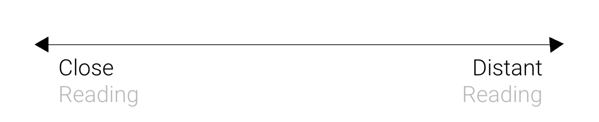

Census Experiments
Jia Zhang
Different ways to think about the Census
The census provides crucial data infrastructure for the United States. It orchestrates data collection at scale, its units of measurement are geographical building blocks for systems such as voting.
In theory, this massive survey is a data centric method of governing, promises are made (in the constitution itself) for a complete count, and the most visible aspect of the project is presented as tables or factoids that describe the state of the nation. In practice, as with most technocratic processes, it is a perfect storm of politics and bureaucracy. Not a single census in its 230 year history has gone undisputed.
The census is an obscure monolith. What is visible to the public only appears at either end of its process. At one end, the results of tabulations, and at the other, a person sitting in front of a form, engaged in a very subjective, personal, and even intimate process of self-identifying as a part of the larger population. Census data always comes with its hidden mechanisms of collection and tabulation. The purpose of visualizing census data is therefore both to show where and how people live, and an opportunity to expose some of the hidden infrastructure surrounding how data is made.
What follows is a series of exercises in census visualization, which attempt to provide new entry points into, and build more intuitive and widespread understandings of datasets like the Census. There are many ways to think and do data visualization. In order to specifically address the census and the above observations, these exercises focus on 2 sets of terms. Data structures vs. data infrastructures, and close vs. distant reading.
Exercise 1 Hierarchy and Quantity
This is an interactive diagram that connects the geographical hierarchy of Census units to the data itself. The original diagram on the left comes from census documentation itself and serves as the interface to access the range of quantities represented by each layer of the hierarchy.
See visualization in full screen here: Click here
Exercise 2 Intersection to Connection
This interactive map combines the boundaries of the census data system with other systems of control and distinction by mapping 11 layers of the many administrative boundaries that govern nyc. Boundaries of fire and policing are largely dictated by spatial qualities. Community and school districts are physical as well, but interjected with some elements of demographics. In contrast, the places that are drawn intentionally as dictated by politics are in essence groupings of census tracts, here is where demographic advantage is the orienting principle and physical order falls to the wayside.
See visualization in full screen here: Click here
What is most interesting is what becomes shared spaces when boundaries don’t align. These overlaps are how we share the city. For example, school district 30 in Queens is shared by 3 state senate districts, 13 zip codes, 17 fire companies, 4 community districts, 2 municipal courts, 2 congressional districts, 4 police precincts, and 6 state assembly districts. These boundaries are not faceless. At the center of each boundary is a person, who through the everyday routine of governance must navigate each overlap.
In a network view, each physical overlap becomes a link, and each boundary is a node. This view shows the strength of the connective tissue between parts of the city in terms of governance. For example, Staten Island is set adrift functionally in terms of schools and safety, but not politically.

Exercise 3 Distant reading and Close reading
These grids of images create distant readings of demographically grouped geographies. At a glance, socioeconomic as well as cultural differences and our histories dictate the extremely different landscapes we inhabit.
These same images placed in a different context than above require closer reading. This series of satellite comparisons show how the same data points can look very different. This sketch generates pairs of satellite images of census tracts in New York city that have the same % of some population measure but are different in almost all other measures. For example, here we can see that unemployment means lots of different things.
See visualization in full screen here: Click here
Exercise 4 Indexing
Indexing is one afterlife of census data. The function of the index is to provide order, it is to embed comparison and prioritization into the data and to replace the descriptive data entirely with a numbered ranking. Every index is different even if they address the same.
Here we dissected 23 indices from various institutions by looking at their intended function, the categories of data they draw from as well as the methodology they use.
Here are 8 separate indices that rank New York City on different measures, each according to a different principle and some even contradicting each other. For example, the SVI index emphasizes access to infrastructure, such as housing and transportation, while the SEVI index emphasizes the exposure of that infrastructure to environmental hazards. These maps point to the result of different indices.
Indexing is one afterlife of census data. The function of the index is to provide order, it is to embed comparison and prioritization into the data and to replace the descriptive data entirely with a numbered ranking. Every index is different even if they address the same.